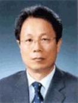

(株)韓国デルファイ
- Home
- 投資メリット
- 外国人投資企業の成功事例
- (株)韓国デルファイ
(株)韓国デルファイ
キム・ヨンジュン社長
会社概要
韓国デルファイは世界最大の自動車統合システムモジュールメーカーである米国のDelphi Automotive Systemsと韓国の大宇が50:50で合併設立し、1984年に大邱達城産業団地でスタートした自動車部品専門メーカーであり、電装品、制動装置、操向及び駆動装置、エンジン制御システムなどの主要核心部品とモジュールを生産している。現在は、韓国自動車メーカーのGM大宇、現代、起亜、双竜、ルノーサムスンはもちろん、米国のGMをはじめSATURN、トヨタ、ドイツOPEL、フランスRENAULT、イタリアFIAT、日本いすゞ、スズキ、オーストラリアGM HOLDEN、南アフリカ共和国DELTAなど世界の完成車メーカーへ部品を供給している。
韓国デルファイは現在、大邱(本社)、鎭川、餘州、群山、富平に5ヵ所の工場を持ち、大邱及び竜仁に2つの技術研究所、タイに海外現地法人を展開している。
一般現況
- 投資国家/投資企業: 米国/Delphi Automotive Systems
- 設立年度： 1984年
- 代表者: キム・ヨンジュン社長
- 従業員数: 2,200人
- 主要生産品目: 電装品、制動装置、駆動装置などの自動車主要核心部品とモジュール
- 住所: 大邱広域市達城郡論工邑論工路664
沿革
- 1984年10月: 大宇自動車部品(株)法人設立 (50/50の合併)
- 1985年09月: 大宇HMS工業(株)法人設立(50/50の合併)
- 1989年12月: 大宇自動車部品(株)/大宇HMS(株)の吸収、合併
- 2000年01月: 商号変更(大宇機電工業株式会社 →韓国デルファイ株式会社)
- 2004年08月: 大邱に本社移転
- 2008年11月: 輸出10億ドル塔受賞
競争力及びビジョン
世界10大自動車部品会社を目指し世界市場における競争力確保を進めており、技術革新を通じた先端製品の開発のみならず、技術、品質、価格、サービスの面で優位性を確保している。